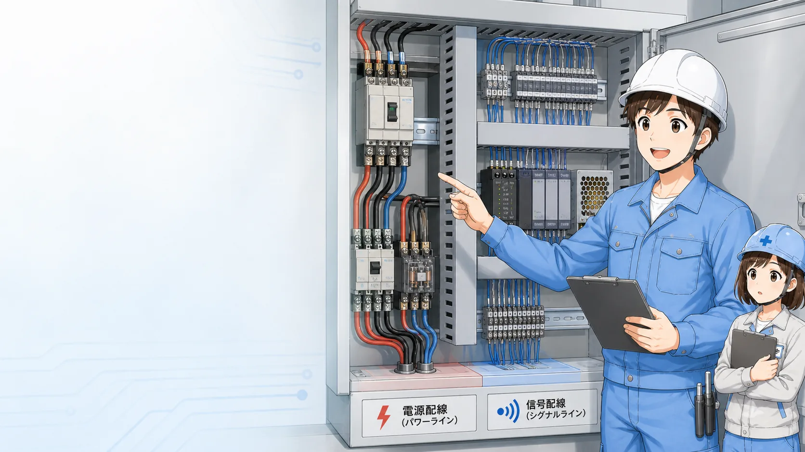
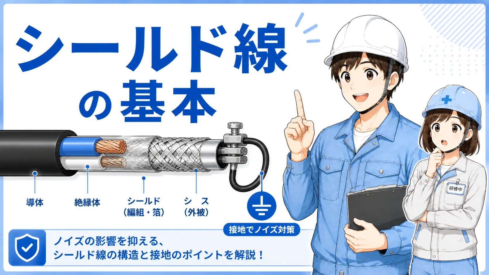
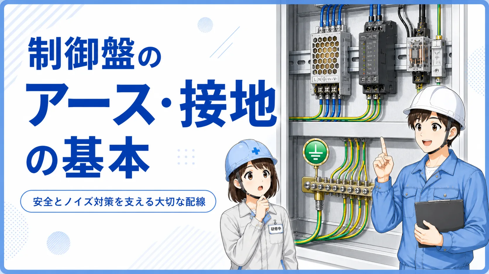
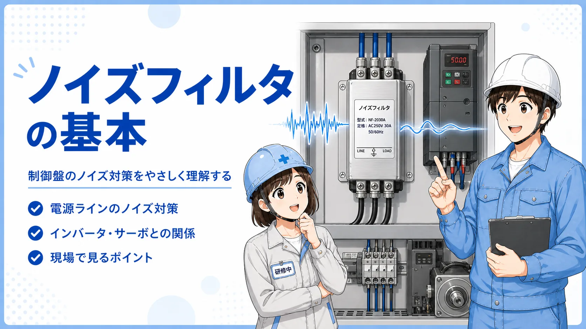

ノイズは「原因不明」の言い換えではない
制御盤でセンサー入力が一瞬変わる、アナログ値が揺れる、通信やエンコーダ値が不安定になると、つい「ノイズかもしれない」と考えたくなります。ただし、接触不良、電源電圧、0V共通、設定、配線ミス、機器故障でも似た症状は出ます。
ノイズを疑う前に、症状がいつ起きるか、何の動作と同時か、直前に何を変更したかを整理すると、対策の方向を外しにくくなります。

配線分離の記事を詳しく見る →
最初から部品を足さない
ノイズフィルタやフェライトコアを追加する前に、どの動作で症状が出るか、配線ルートや接地、シールド処理、電源系統に変更がないかを確認します。原因の位置が分からないまま対策部品を増やすと、切り分けが難しくなります。

後輩センサーがたまに誤動作するなら、とりあえずシールドをアースすればいいですか？

先輩接続先や機器によって推奨が違うよ。まず「どこから入って、どこへ影響しているか」を考えて、メーカー資料と設備図面を優先しよう。
ノイズ対策は「発生源・伝搬経路・受け側」に分ける
EMC対策の基本は、ノイズを出す側、伝わる経路、影響を受ける側に分けると理解しやすくなります。インバータやサーボ、接触器、ソレノイド、スイッチング電源などが発生源になることがあり、配線の近接、共通インピーダンス、電源線、接地経路などを通じて信号側へ影響する場合があります。
1. 発生源
インバータ、サーボ、モータ、接触器、リレー、ソレノイド、スイッチング機器など。症状のタイミングと動作が一致するかを見ます。
2. 伝搬経路
動力線との並走、同一ダクト、電源系統、シールド処理、FG・0V・SGなど、ノイズが移る経路を考えます。
3. 影響を受ける側
アナログ入力、エンコーダ、通信、微弱センサー、高インピーダンス入力など、影響を受けやすい回路を整理します。
4. 現象の再現条件
特定モータの起動時だけ、接触器OFF時だけ、設備のある工程だけなど、再現条件が切り分けの手掛かりです。
対策は一か所とは限らない
発生源側でサージを抑える、経路を分離・遮蔽する、受け側の配線やフィルタを見直すなど、複数の層で対策することがあります。
配線分離・シールド・接地・フィルタは役割が違う
ノイズ対策は、どれか一つを入れれば終わりではありません。対策方法ごとに狙っている場所が違います。
| 対策 | 主な役割 | 確認したいこと |
|---|---|---|
| 配線分離 | 発生源と信号線の結合を減らす | 動力線との並走、同一ダクト、盤内ルート |
| シールド | 外来ノイズの結合を抑える | ケーブル仕様、シールド処理、接続先の指定 |
| 接地 | 安全確保とノイズ帰路・基準電位の安定 | PE・FG・SG・0Vの役割とメーカー指定 |
| ノイズフィルタ | 電源線などを伝わるノイズを減らす | 対象回路、定格、配置、配線の取り回し |
| サージ対策 | コイル開閉などの急峻な過渡現象を抑える | 発生源の種類と機器メーカーの推奨 |
配線分離
センサーやエンコーダ、アナログ信号などの配線は、モータや高電圧・大電流の配線から物理的に分けるのが基本です。オムロンや三菱電機の技術資料でも、ノイズ源との分離、別ダクト・別配管、シールドなどが基本対策として示されています。
配線分離の記事を詳しく見る →
シールド
シールド線は外部からの電磁的な影響を減らすために使われます。ただし、シールドをどこへ接続するかは機器や信号方式によって異なります。「必ず片側」「必ず両側」と一律に決めず、接続する機器の取扱説明書や配線図を優先します。

シールド線の記事を詳しく見る →
接地
接地は安全だけでなく、ノイズ電流の帰路や基準電位に関わる重要な要素です。一方で、PE、FG、SG、0Vを目的を理解せず一括で扱うと、別の問題を生むことがあります。設備の接地方式とメーカー指定を確認して判断します。

制御盤接地の記事を詳しく見る →
ノイズフィルタ
電源線から伝わるノイズに対しては、用途に合ったノイズフィルタを使う場合があります。定格や設置位置、フィルタ前後の配線が近接しないことなど、製品ごとの注意事項を確認します。フィルタは万能な後付け部品ではなく、ノイズ経路と目的が合っていることが重要です。

ノイズフィルタの記事を詳しく見る →
ノイズが疑われる誤動作の切り分け方
ここでは危険な活線作業や設備固有の改造手順ではなく、原因領域を整理する順番を示します。実機確認は設備の安全手順、メーカー資料、資格・権限の範囲を優先してください。
1. 症状とタイミングを記録
どの信号が変わるのか、どの装置動作と同時か、常時か一時的かを整理します。
2. 直前の変更を確認
インバータ追加、ケーブル変更、盤改造、センサー交換、経路変更など、症状が出る前の変更点を確認します。
3. 発生源候補を絞る
モータ起動、接触器開閉、ソレノイド動作、スイッチング機器など、症状と同期する候補を整理します。
4. 伝搬経路を見る
信号線との近接、同一ダクト、シールド処理、接地、電源系統、共通線などを図面と実配線で照合します。
5. 受け側の条件を確認
入力仕様、ケーブル推奨、フィルタ設定、機器のEMC配線条件をメーカー資料で確認します。
6. 変更は一つずつ評価
安全な停止状態と管理された試験条件で、複数の対策を同時に変えず、どの変更が効いたか分かるようにします。
「ノイズだから」で保護や安全機能を迂回しない
安全回路、インターロック、保護機器を無効化して原因確認する方法は採りません。安全関連の異常は設備メーカー、設計者、資格を持つ担当者と確認します。
症状から見る代表的な確認方向
| 症状 | まず整理すること | 関連テーマ |
|---|---|---|
| アナログ値が揺れる | 信号方式、配線経路、シールド、0V/SG、近くの動力機器 | アナログ入力、シールド、配線分離 |
| エンコーダ値が飛ぶ | 動力線との並走、シールド、接地、高速入力条件 | エンコーダ、シールド、接地 |
| センサー入力が一瞬変わる | 電源、COM、接触不良、ノイズ源との同期、配線経路 | PLC入力、センサー、配線分離 |
| インバータ運転中だけ不安定 | モータ・出力ケーブル、接地、電源系統、信号配線の距離 | 接地、フィルタ、配線分離 |
| コイルOFF時に誤動作する | 誘導負荷のサージと保護部品の有無・仕様 | サージ保護、リレー、電磁弁 |
似た症状でもノイズとは限らない
電源電圧低下、端子ゆるみ、断線しかけ、COM不良、設定値、機器故障でも似た現象になります。ノイズ対策の前に基本要因を除外することが重要です。
よくある誤解
「シールドは片側接地が絶対」
機器や信号、周波数、EMC設計によって推奨は変わります。製品マニュアルやメーカーの配線指示を優先します。
「アースを増やせば増やすほど良い」
接地は役割と接続点が重要です。PE・FG・SG・0Vの意味を区別し、設備設計に沿って扱います。
「ノイズフィルタを付ければ直る」
ノイズの伝搬経路が電源線でなければ、フィルタの狙いと原因が一致しません。発生源・経路・受け側を整理してから選びます。
「たまにしか出ないからノイズ」
間欠症状は接触不良や電源、温度、機械的な位置ずれでも起こります。再現条件と同時に変化する信号を記録することが大切です。
メーカー資料で確認したいポイント
一般的な考え方だけで実機の配線方法を決めず、対象機器の取扱説明書とEMC・配線上の注意を確認します。シールドの接地方法は機器やネットワークによって推奨が変わるため、「片側接地が絶対」などと決めつけず、対象製品の資料を優先します。
メーカー公式資料
オムロン｜センサの上手な使い方では、シールド線・ツイストペア線、モータや電磁開閉器などのノイズ源との分離、別ダクト等の考え方を確認できます。
三菱電機FA｜一次側からのノイズ対策では、ノイズフィルタや接地条件などの考え方を確認できます。
三菱電機FA｜シールド線の接地処理は、機器・ネットワークごとに接地指示が異なり得ることを確認する例として参照できます。
資料で見る項目
推奨ケーブル、シールド処理、接地端子の扱い、信号線と動力線の分離、フィルタ・サージ対策の指定、設置距離や配線上の注意を確認します。
この記事は役に立ちましたか？
今後の記事づくりの参考にします。どちらかを選ぶだけで回答できます。
回答は匿名で集計し、個人情報の入力はありません。
あわせて読みたい関連記事
このハブ記事で原因領域を絞ったら、個別テーマの記事へ進むと理解しやすくなります。